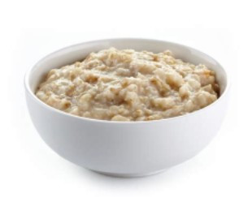

Oatmeal

Description:
Oh yummy, your favorite organic rolled-oats oatmeal!
Ingredients:
- 1/2 cup Organic Rolled Oats
- 1 Cup Water
- Salt or Sugar (to taste)
- 1/4 Stick Butter
Preparation Instructions:
- Bring water, salt/sugar, milk/half n half to start boil on high heat approx 2.5 minutes
- Reduce heat to medium, Add rolled oats, stir in
- Cook for 6.5 minutes
- Reduce heat down to 3, and stir to desired consistency
Back to Odin Recipes Homepage